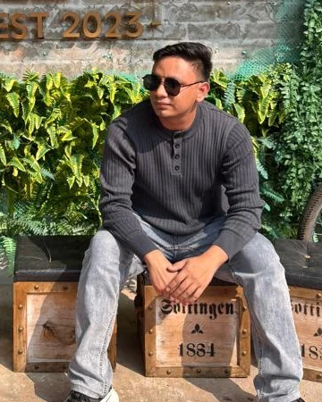

KONSEP DEMO / WEB
JavaScript Admin Dashboard
React · Next.js · Node.js
Halo, saya membina sistem web dan aplikasi mobile dengan JavaScript & Flutter.
Full-Stack & Mobile App Developer

Saya seorang Full-Stack Developer dengan 5 tahun pengalaman membangunkan sistem dan aplikasi, serta 3 tahun pengalaman freelance. Fokus utama saya ialah Node.js, React, Next.js dan NestJS. Saya juga membangunkan aplikasi mobile menggunakan Flutter.
5 tahunPembangunan sistem & aplikasi
3 tahunPengalaman freelance
Sedang meneroka DevOps, AI automation dan pembangunan berbantu AI melalui brainstorming serta perancangan berperingkat.
React · Next.js · Node.js
Flutter · Aplikasi mobile
Saluran hubungan dan resume sebenar akan ditambah.
Pratonton reka bentuk sahaja. Scene 3D tanpa watak; projek di atas ialah konsep demo.